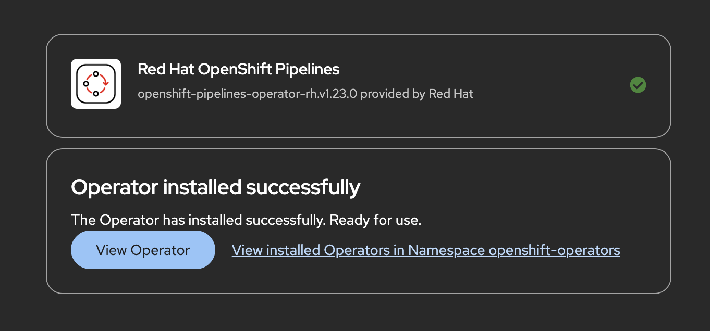
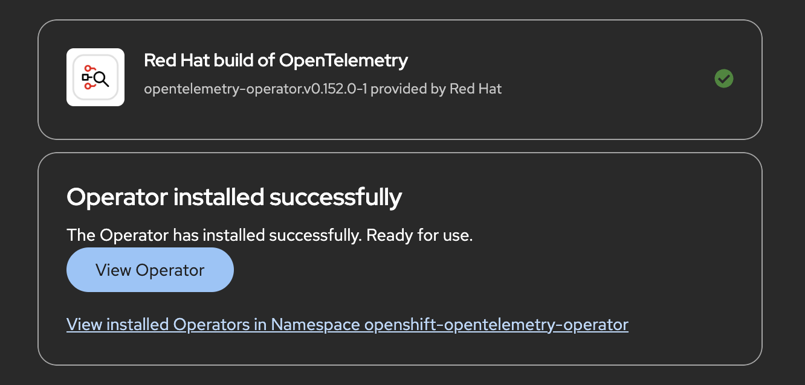

Lab 2: Deploy Supporting Services
Overview
In this lab, you’ll deploy the shared platform services that support the Application Platform Software Factory.
These services provide the database, messaging, CI/CD, and observability capabilities required by the application throughout the remainder of the lab.
By the end of this lab, you’ll have a working development platform that can be used by Dev Spaces, OpenShift Pipelines, and GitOps deployments.
Install Red Hat OpenShift Pipelines
Red Hat OpenShift Pipelines is a Kubernetes-native CI/CD solution based on the open source Tekton project. It automates common software delivery tasks such as building applications, running tests, creating container images, and publishing artifacts.
Throughout this lab, you’ll use OpenShift Pipelines to automate the application’s build process before deploying it through GitOps.
Install the Operator
Install the Red Hat OpenShift Pipelines Operator from OperatorHub.
-
Open the OpenShift Web Console.
-
Log in using the
admincredentials provided on the RHDP lab information page. -
From the navigation menu, select menu:Ecosystem[OperatorHub].
-
Search for Red Hat OpenShift Pipelines. <it might take sometime to load the operator, please wait>
-
Select the operator and click btn:[Install].
-
Accept the default installation settings:
-
Update channel:
latest -
Installation mode:
All namespaces on the cluster -
Installed namespace:
openshift-operators
-
-
Click btn:[Install].
-
Wait until the operator status changes to Succeeded.

Verify the Installation
Verify that the operator has been installed successfully.
oc get csv -n openshift-operators | grep pipelinesThe command should return the OpenShift Pipelines ClusterServiceVersion (CSV) with a status of Succeeded.
Next, verify that the Tekton platform components are running.
oc get pods -n openshift-pipelinesYou should see the Tekton controller pods in the Running state, including:
-
tekton-pipelines-controller -
tekton-triggers-controller -
tekton-events-controller -
tekton-webhook
Installing the operator automatically deploys the Tekton controllers and supporting components into the openshift-pipelines namespace. These components will execute the CI/CD pipelines you create later in this lab.
|
Install Red Hat AMQ Streams
Red Hat AMQ Streams provides Apache Kafka as a managed service on OpenShift. Kafka enables applications to exchange messages asynchronously, making it easier to build scalable, event-driven applications.
In this workshop, the ETX App Base application uses Kafka to exchange messages between application services.
Install the Operator
-
Open the OpenShift Web Console.
-
From the navigation menu, select menu:Operators[OperatorHub].
-
Search for Streams for Apache Kafka.
Install Streams for Apache Kafka only. Do not install Streams for Apache Kafka Proxy. -
Click btn:[Install].
-
Accept the default installation settings:
-
Update channel:
stable -
Installation mode:
All namespaces -
Installed namespace:
openshift-operators
-
-
Click btn:[Install].
-
Wait until the operator status changes to Succeeded.

Deploy a Kafka Cluster
With the operator installed, you can now deploy a Kafka cluster in your application namespace.
Starting with AMQ Streams 3.x, Kafka clusters use KafkaNodePools to manage broker nodes.
A KafkaNodePool defines a group of Kafka nodes, their roles, and storage configuration. In this workshop, you’ll deploy a single-node Kafka cluster running in KRaft mode, where the same node acts as both the controller and broker. This removes the need for ZooKeeper and simplifies the deployment for development environments.
Apply the following manifest:
oc apply -f - <<'EOF'
apiVersion: kafka.strimzi.io/v1
kind: KafkaNodePool
metadata:
name: kafka
namespace: etx-app-dev
labels:
strimzi.io/cluster: parasol-kafka
spec:
replicas: 1
roles:
- controller
- broker
storage:
type: ephemeral
---
apiVersion: kafka.strimzi.io/v1
kind: Kafka
metadata:
name: parasol-kafka
namespace: etx-app-dev
annotations:
strimzi.io/node-pools: enabled
strimzi.io/kraft: enabled
spec:
kafka:
version: 4.2.0
metadataVersion: 4.2-IV0
listeners:
- name: plain
port: 9092
type: internal
tls: false
- name: tls
port: 9093
type: internal
tls: true
config:
offsets.topic.replication.factor: 1
transaction.state.log.replication.factor: 1
transaction.state.log.min.isr: 1
default.replication.factor: 1
min.insync.replicas: 1
entityOperator:
topicOperator: {}
userOperator: {}
EOFVerify the Kafka Cluster
Wait for the Kafka cluster to become ready.
oc wait kafka/parasol-kafka \
--for=condition=Ready \
--timeout=300s \
-n etx-app-devVerify that the Kafka pods are running.
oc get pods \
-l strimzi.io/cluster=parasol-kafka \
-n etx-app-devThe output should include:
-
parasol-kafka-kafka-0 -
parasol-kafka-entity-operator-*
Ensure all Kafka pods are in the Running state before proceeding.
|
Verify the Bootstrap Service
Applications connect to Kafka through the bootstrap service.
Retrieve the service endpoint.
oc get service parasol-kafka-kafka-bootstrap \
-n etx-app-dev \
-o jsonpath='{.metadata.name}:{.spec.ports[0].port}{"\n"}'The command should return:
parasol-kafka-kafka-bootstrap:9092
This bootstrap endpoint will be used later when configuring the application.
Deploy PostgreSQL Database
Deploy PostgreSQL using the Red Hat certified container image for application data persistence.
Create PostgreSQL Deployment
oc apply -f - <<'EOF'
apiVersion: v1
kind: Secret
metadata:
name: parasol-db-secret
namespace: etx-app-dev
type: Opaque
stringData:
database-name: parasol
database-user: parasol
database-password: parasol
---
apiVersion: v1
kind: Service
metadata:
name: parasol-db
namespace: etx-app-dev
spec:
ports:
- name: postgresql
port: 5432
targetPort: 5432
selector:
app: parasol-db
---
apiVersion: apps/v1
kind: Deployment
metadata:
name: parasol-db
namespace: etx-app-dev
spec:
replicas: 1
selector:
matchLabels:
app: parasol-db
template:
metadata:
labels:
app: parasol-db
spec:
containers:
- name: postgresql
image: registry.redhat.io/rhel9/postgresql-16:latest
ports:
- containerPort: 5432
env:
- name: POSTGRESQL_USER
valueFrom:
secretKeyRef:
name: parasol-db-secret
key: database-user
- name: POSTGRESQL_PASSWORD
valueFrom:
secretKeyRef:
name: parasol-db-secret
key: database-password
- name: POSTGRESQL_DATABASE
valueFrom:
secretKeyRef:
name: parasol-db-secret
key: database-name
volumeMounts:
- name: postgresql-data
mountPath: /var/lib/pgsql/data
livenessProbe:
exec:
command:
- /usr/libexec/check-container
- --live
initialDelaySeconds: 120
timeoutSeconds: 10
readinessProbe:
exec:
command:
- /usr/libexec/check-container
initialDelaySeconds: 5
timeoutSeconds: 1
resources:
limits:
memory: 512Mi
cpu: 500m
requests:
memory: 256Mi
cpu: 100m
volumes:
- name: postgresql-data
emptyDir: {}
EOF
This Deployment uses emptyDir for storage, which means data is lost when the pod restarts. For production, use a PersistentVolumeClaim backed by persistent storage.
|
Wait for PostgreSQL to be ready:
oc rollout status deployment/parasol-db -n etx-app-devVerify the PostgreSQL pod is running:
oc get pods -l app=parasol-db -n etx-app-devTest the database connection:
oc run postgresql-test --rm -it --restart=Never \
--image=registry.redhat.io/rhel9/postgresql-16:latest \
--env PGPASSWORD=$(oc get secret -n etx-app-dev parasol-db-secret -o jsonpath='{.data.database-password}' | base64 -d) \
-n etx-app-dev -- \
psql -h parasol-db \
-U $(oc get secret -n etx-app-dev parasol-db-secret -o jsonpath='{.data.database-user}' | base64 -d) \
-d $(oc get secret -n etx-app-dev parasol-db-secret -o jsonpath='{.data.database-name}' | base64 -d) \
-c '\conninfo'You should see connection information confirming PostgreSQL is accessible.
The database credentials are stored in the parasol-db-secret Secret. Your application will use these same credentials to connect.
|
Install the Red Hat Build of OpenTelemetry
The Red Hat Build of OpenTelemetry provides the observability foundation for cloud-native applications. It enables applications to collect and export telemetry data such as distributed traces, metrics, and logs.
In this workshop, you’ll install the OpenTelemetry Operator, deploy an OpenTelemetry Collector, and configure automatic instrumentation for Java applications.
Install the Operator
-
Open the OpenShift Web Console.
-
From the navigation menu, select menu:Operators[OperatorHub].
-
Search for Red Hat build of OpenTelemetry.
-
Click btn:[Install].
-
Accept the default installation settings:
-
Update channel:
stable -
Installation mode:
All namespaces -
Installed namespace:
openshift-opentelemetry-operator
-
-
Click btn:[Install].
-
Wait until the operator status changes to Succeeded.

Deploy an OpenTelemetry Collector
An OpenTelemetry Collector receives telemetry data from instrumented applications and forwards it to one or more observability backends.
For this workshop, you’ll deploy a collector that exports traces to its own logs for demonstration purposes.
Apply the following manifest:
oc apply -f - <<'EOF'
apiVersion: opentelemetry.io/v1beta1
kind: OpenTelemetryCollector
metadata:
name: otel-collector
namespace: etx-app-dev
spec:
mode: deployment
config:
receivers:
otlp:
protocols:
grpc:
endpoint: 0.0.0.0:4317
http:
endpoint: 0.0.0.0:4318
processors:
batch: {}
probabilistic_sampler:
sampling_percentage: 100.0
exporters:
debug:
verbosity: detailed
service:
pipelines:
traces:
receivers: [otlp]
processors: [probabilistic_sampler, batch]
exporters: [debug]
EOF
The debug exporter writes trace information to the collector logs. It is suitable for demonstrations and development environments.
|
In production, replace the debug exporter with a tracing backend such as Red Hat build of Tempo, Jaeger, or another supported OpenTelemetry-compatible platform.
|
Verify the Collector
Wait for the collector deployment to become available.
oc rollout status deployment/otel-collector-collector \
-n etx-app-devVerify that the collector pod is running.
oc get pods \
-l app.kubernetes.io/name=otel-collector-collector \
-n etx-app-dev
Ensure the collector pod is in the Running state before continuing.
|
Configure Automatic Instrumentation
The OpenTelemetry Operator can automatically instrument Java applications without modifying application code.
Create an Instrumentation resource that defines how Java applications should export telemetry.
Apply the following manifest:
oc apply -f - <<'EOF'
apiVersion: opentelemetry.io/v1alpha1
kind: Instrumentation
metadata:
name: java-instrumentation
namespace: etx-app-dev
annotations:
instrumentation.opentelemetry.io/inject-java: "true"
spec:
exporter:
endpoint: http://otel-collector-collector:4317
propagators:
- tracecontext
- baggage
sampler:
type: always_on
java:
image: ghcr.io/open-telemetry/opentelemetry-operator/autoinstrumentation-java:latest
EOFThe "instrumentation.opentelemetry.io/inject-java: true" enable automatic instrumentation.
When the application is deployed, the OpenTelemetry Operator automatically injects the Java agent into the application container.
The always_on sampler captures every trace generated by the application, making it ideal for workshop environments. Production environments typically use sampling strategies to reduce telemetry volume.
|
Verify Automatic Instrumentation
After deploying an application with the instrumentation annotation, verify that traces are being received by the collector.
You can view the collector logs using:
oc logs deployment/otel-collector-collector -n etx-app-devYou should see trace data being exported by the debug exporter.
| You’ll use this configuration later in the workshop when deploying the ETX App Base application. |
📋 Summary
You now have the following services deployed and ready:
-
Vault (pre-deployed) — secrets management with Kubernetes authentication for pipeline access
-
OpenShift Pipelines — Tekton CI engine ready to run pipelines
-
AMQ Streams Kafka Cluster —
parasol-kafka-kafka-bootstrap:9092withintaketopic -
PostgreSQL Database —
parasol-db:5432with databaseparasol -
OpenTelemetry — collector and auto-instrumentation configured for distributed tracing
Your application can now connect to these services:
-
Kafka bootstrap server:
parasol-kafka-kafka-bootstrap:9092 -
PostgreSQL host:
parasol-db:5432 -
Database credentials: Available in
parasol-db-secretSecret